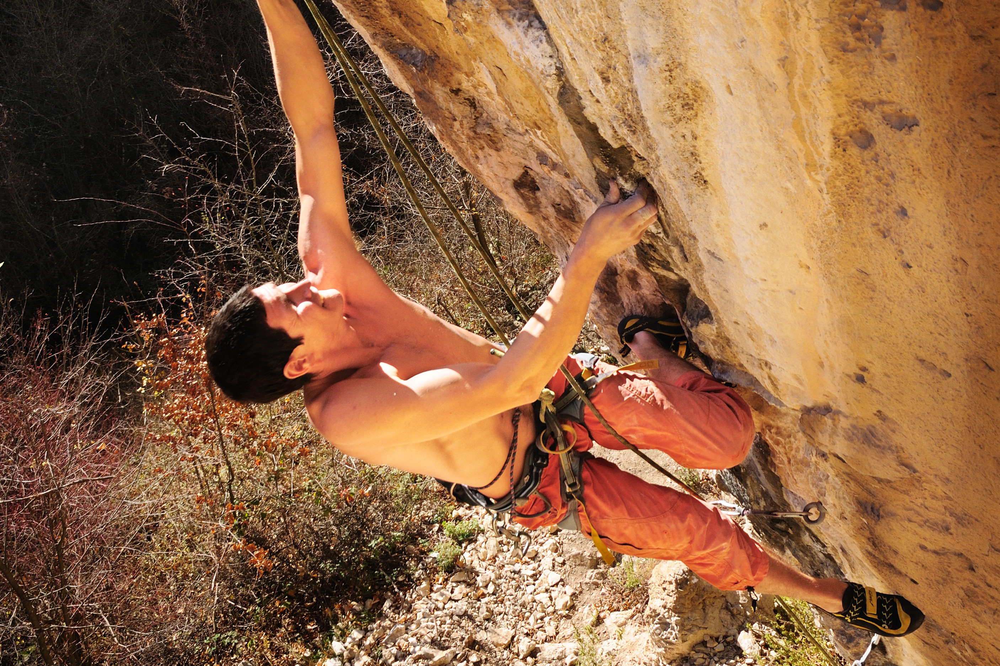
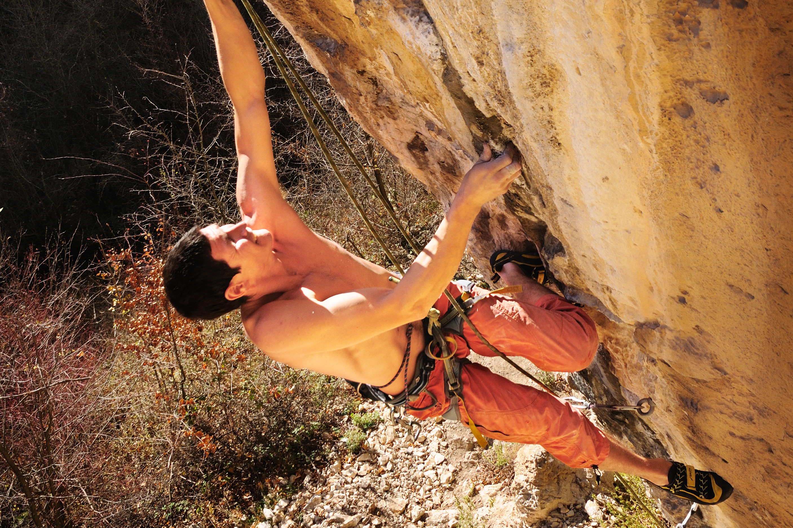

S M A R T plan. Planiranje treninga prema S.M.A.R.T. principima, usmereno na rezultate. Fizička priprema sa osvrtom na osnovne motoričke sposobnosti ali i mobilnost, propriocepciju i funkcionalno kretanje. Tehnička i mentalna priprema za sve tipove penjanja.
Poznavanje stanja u kome se nalazi penjač, u skladu sa njegovim ciljevima i praćenje razvoja u skladu sa postavljenim ciljevima su najbolji način za održavanje motivacije za trening. Poznavanje stanja u kome se nalazi penjač, u skladu sa njegovim ciljevima, i praćenje razvoja u skladu sa tim.
Metodične i moderne obuke sa akcentom na praktičnoj primeni. Programi obuke su kompatibilni sa programima PSS-a ali se ovi programi i proširuju i prilagođavaju modernim potrebama i pristupima. Stalno napredovanje, analiza principa i tehnika i razvoj kroz primenu su naš cilj, bilo da se radi o sportskom penjanju, trad tehnikama neophodnim za alpinizam ili o savremenom lednom penjanju i pripremi.
Trad penjanje, psihofizička pripema
Sportsko penjanje na raznim penjalištima širom evrope
Bouldering na sjajnim lokacijama kod nas i u Evropi